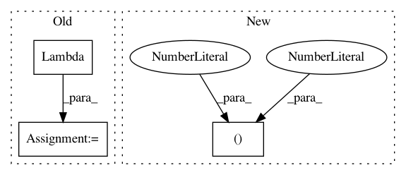

56e6adb2773497506875c7cbd7a1fe6b5c59fb4c,tests/layer/test_gcn.py,,test_GraphConvolution_dense,#,60
Before Change
x = features[None, :, :]
// For dense matrix, remove batch dimension
A_mat = Lambda(lambda A: K.squeeze(A, 0))(A_t)
out = GraphConvolution(2)([x_t, A_mat])
model = keras.Model(inputs=[x_t, A_t], outputs=out)
preds = model.predict([x, adj], batch_size=1)
After Change
// batch dimension > 1 should work with a dense matrix
x_t = Input(batch_shape=(10,) + features.shape)
A_t = Input(batch_shape=(10, 3, 3))
input_data = [np.broadcast_to(x, x_t.shape), np.broadcast_to(adj, A_t.shape)]
out = GraphConvolution(2)([x_t, A_t])
In pattern: SUPERPATTERN
Frequency: 3
Non-data size: 3
Instances
Project Name: stellargraph/stellargraph
Commit Name: 56e6adb2773497506875c7cbd7a1fe6b5c59fb4c
Time: 2020-04-19
Author: Huon.Wilson@data61.csiro.au
File Name: tests/layer/test_gcn.py
Class Name:
Method Name: test_GraphConvolution_dense
Project Name: eriklindernoren/Keras-GAN
Commit Name: 4edcbc432d59b73cf79dd9a7364b42a1dafd1eff
Time: 2018-01-21
Author: eriklindernoren@gmail.com
File Name: infogan/infogan.py
Class Name: INFOGAN
Method Name: build_discriminator
Project Name: keras-team/keras-applications
Commit Name: e0a649263bdc4b9803c4103f288a0675ebbecd5d
Time: 2019-10-13
Author: me@taehoonlee.com
File Name: keras_applications/resnet_common.py
Class Name:
Method Name: block3